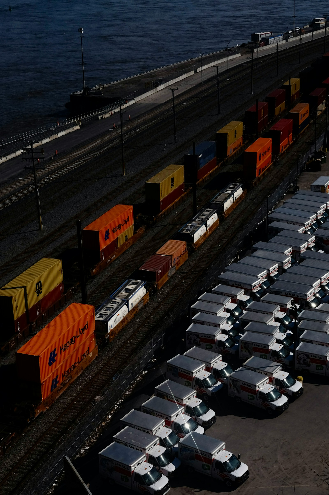
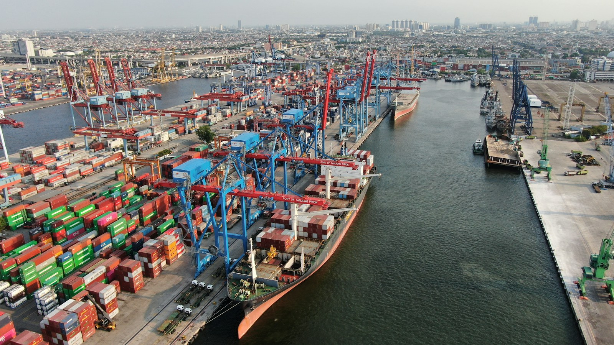

Define
Product, grade, volume, destination and timing.

International sourcing, commercial coordination and delivery arrangements shaped around each transaction.
Our role
We connect producers and professional buyers, helping align product requirements, technical information, commercial terms and delivery plans. Logistics are coordinated through partners. ENECO does not present partner facilities, fleets or terminals as its own assets.
Learn more about ENECOHow we work
Product, grade, volume, destination and timing.
Explore sourcing options and relevant technical details.
Align commercial terms and transaction documentation.
Coordinate packaging, transport and delivery through partners.

Let’s discuss your requirements
Share your product, quantity and destination with our team.
Request a quote01 / Define
Product, grade, volume, destination and timing shape each enquiry before sourcing begins.

02 / Source
Relevant product and technical information is gathered around the requirement.
03 / Coordinate
Commercial terms and transaction documentation are coordinated for clarity.
04 / Arrange
Packaging, transport and delivery arrangements are coordinated through relevant partners.
01 / Define
Product, grade, volume, destination and timing shape each enquiry before sourcing begins.
02 / Source
Relevant product and technical information is gathered around the requirement.
03 / Coordinate
Commercial terms and transaction documentation are coordinated for clarity.
04 / Arrange
Packaging, transport and delivery arrangements are coordinated through relevant partners.